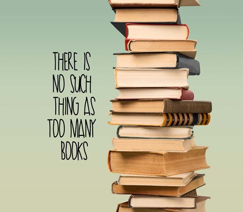

Being successful and having a regime of daily habits for success go hand in hand. To be successful and not to have consistency in life is absurd. With focus and dedication to a skill or goal, comes doing things in a routine fashion. This is universal to all successful people. The larger the scale of the success, the more daily habits they tend to keep. Ask any successful person in the world this question and their answers will almost all be identical.
Do you have any habits that help drive you further towards success?
I sure do. And even though I am not yet at the level of success I wish to be at, I still retain a list of daily habits of success that my mentors have taught me over the years. In the spirit of sharing experience and knowledge here are my Top 10 daily habits for successful people.
1. Be Consistent With Waking Up
Starting each morning on the right foot is the most important factor to having a productive and successful day. Getting up early gives you time each morning to knock out the grunge work early and be done with it by the time the rest of the world starts waking up.
Yes...that means waking up before dawn usually.
Studies have shown that early risers are more optimistic and aware of their surroundings. You will accomplish more by having and sticking to a routine. Getting up early is an important part of that routine. In the time that you are awake each morning you can do number two which is...
2. Meditate
I know it sounds new age and frilly, but meditation is one tool of many that I use to stay centered in my life. It gives me the ability to ponder uninterrupted about dilemmas or issues I may be coming to face that day. I believe that setting your mind right every morning is a key to living a happy and successful life. This along with the other eight daily habits for success, will give you a new breath on life.
Use this time to go over your schedule for the day and visualize how you want any meetings to go. Sales pitches? No problem, sort the possible objections out ahead of time. Give yourself that motivational speech you need sometimes. Whatever you do this is your time to balance and center your mind for the day.
3. Eat A Good Breakfast
Cliche as it may sound, a good breakfast has been shown time and time again to promote brain activity and alertness. These traits will give you the extra bit needed to get through most afternoon slumps. You spent the rest of the morning centering and balancing your mind. Do the same for you body. You will thank yourself later.
Thanks to the extra time you have in the mornings from getting up earlier you can take your time. Make yourself something nice for breakfast pamper yourself. It will aid in your relaxation and readiness to take on the day ahead. As simple as this step is, it can be the easiest one to overlook as well.
4. Prioritize Your To-Do List
Every morning is a chance to reevaluate what has been done what is getting done and what needs to be done still. Every morning go through your lists and find the biggest, baddest item on there and set it at the top. Being able to address the big items first free up the remainder of the day to focus on tending to the rest of it. Small items are low stress so get the high stress items out of the way first and you will be thanking your anxiety level later on.
5. Read A Book
Not a whole book every morning, but read a little non-fiction self improvement or motivational text each morning. It helps give you some perspective to go off of. Keeping you focused and in line with your goals towards success is our number one priority and keeping you growing is our way to ensure eventual success. These listed below can all be grabbed off of Amazon for under $10 and are my personal top picks for any beginning reader, looking to grow as a person.
6. Move Your Body
This one, I will be the first to admit is my least favorite on the list. But I have come to learn over the last several years that as little as I like exercising, I acknowledge its importance in being balanced in life. And if the theme is not clear yet, having balance in your life will lend you the best opportunity to grow and reach success as an individual.
This does not mean go run 10 miles everyday before work. Or put in three hours at the gym doing bench each morning. What I am saying is get off your butt and move around. Here are some workouts to choose from.
- 20 Burpees
- 25 Push-ups
- 20 Mountain Climbers
- 25 Jack Knife Sit-ups
- 30 Second Rest
- Repeat 2 more times
Something to build off of at least to get you started.
7. Invest In Yourself
Now this is a daily habit but not in the financial sense necessarily. Investing in yourself can come in the form of knowledge, educational sources, literally investing in your future with portfolios and investment funds. It can mean getting online and deciding that you are finally going to start that website, or apply for that job. Investing in yourself is doing just that. Take time each day to find a way to invest in your future.
A great way to hone skills and earn money online is to join Fiverr and list services you have available to help bring in those extra clients throughout the day. It may not be much but it is a way to help get your name out there and potentially have a decent turn around. It is also a great place to go if you want to invest in yourself by giving yourself some more time. Hire someone to knock out the simple stuff so you can focus on building yourself up.
8. Make Sure to Spend Time With Loved Ones
Your work life will be all out of whack if your home life is turning to trash from neglect. It is super important to make time each and every day to at least catch up with loved ones. Whether that is friends, family or the barber down the street. Someone important in your life thinks the same about you. So, pay a visit, call your mom, kiss your wife. The little things you do over time add up and the quality of love and fulfillment you will get from having a balance personal life will undoubtedly bleed over into your professional space.
9. Reevaluate Progress Each Night
As each day comes down to a close, go through your lists.
What did you accomplish? What needs work?
Look through and see what things need to be put on the list for tomorrow. More importantly, look through and see what you have finished today. Or even just progressed with. Many things may not be able to be accomplished in one day of work so that is why you should write down what you did and what still needs to be done. Staying on track and bringing each days goals full circle through writing them down, keeps you on track to success.
10. For Goodness Sake...UNPLUG!!
This one requires no explanation. Just unplug. At the end of every day for the last hour or so before bed don't use your electronics. Everything that needed to be done on them should have been done prior to getting ready for bed. So, log off of Facebook and Twitter. Leave Pinterest for tomorrow and just be present. For the last few minutes before going to bed just be present with the world and take in the day.
For all its good and bad moments, I hope that by doing each of these daily habits for success you also can achieve balance and output in your life unlike anything you imagined before.
If you have any comments or questions leave a comment below and I will be sure to get back ASAP to you!
Andrew D. - The Loopy Producer
Turning Passions into Profits